Jeux de société
Des pièces pour les jeux d'échecs et de dames
Les jeux de société réunissent petits et grands : c'est toujours de bons moments et d'échanges !
Au Bugue, en plein cœur du Périgord Noir
Je fonds au chalumeau des baguettes de verre transparent ou en couleur, puis je façonne par étirements, pincements et coupes des animaux, des perles, des fleurs. Chaque pièce est conçue à main levée, sans moule.
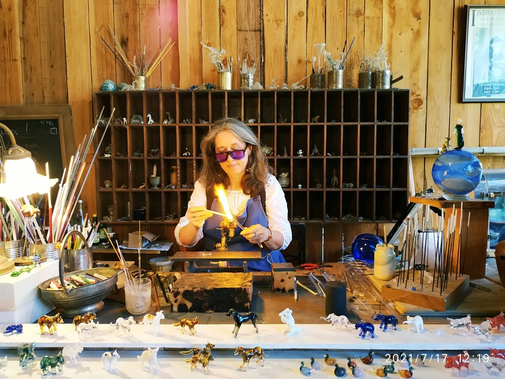
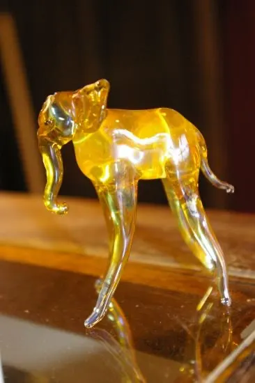
Mon atelier est installé au Bugue, non loin des terres de Cro-Magnon et des célèbres villages des Eyzies, de Montignac et de Sarlat.
Je travaille la technique du verre filé, dite « technique à la flamme ou à la lampe », apparue dès le XVIe siècle.
Le filage consiste à fondre des baguettes de verre transparent ou en couleur à l'aide d'un chalumeau, et à façonner des personnages, des animaux, des perles, des fleurs. Chaque pièce est conçue à main levée, sans moule.
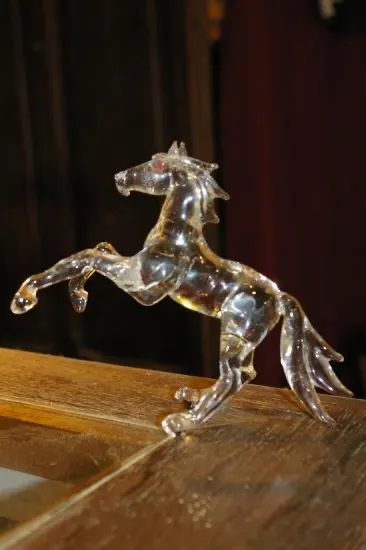
Des pièces pleinesDes objets qui, bien souvent, sont dits « pleins » et non soufflés.
Mes orientations de travail s'articulent autour des thèmes des animaux, des bijoux et des pièces pour jeux.
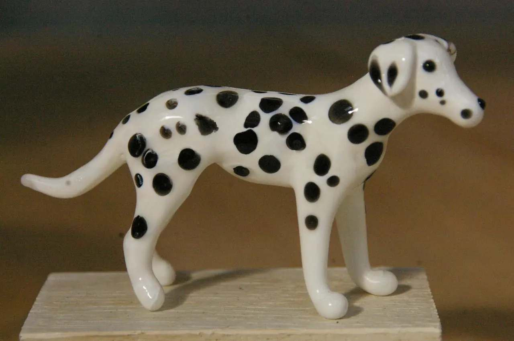
Dalmatien, verre filé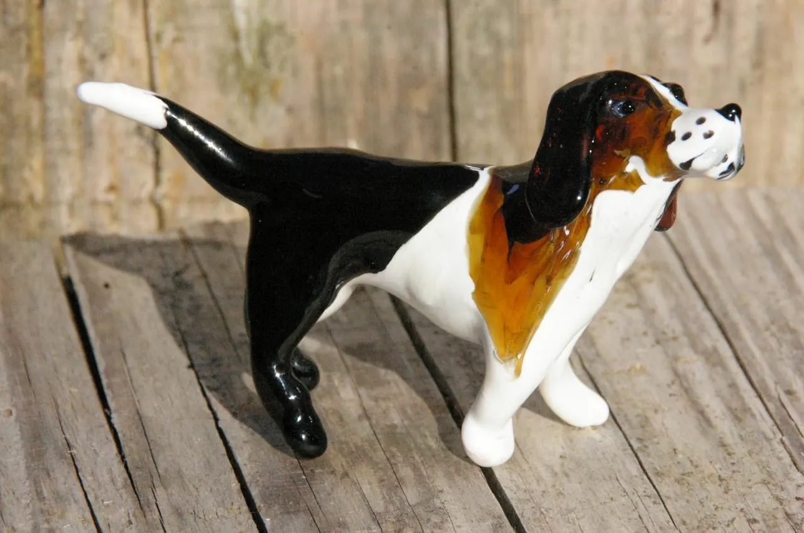
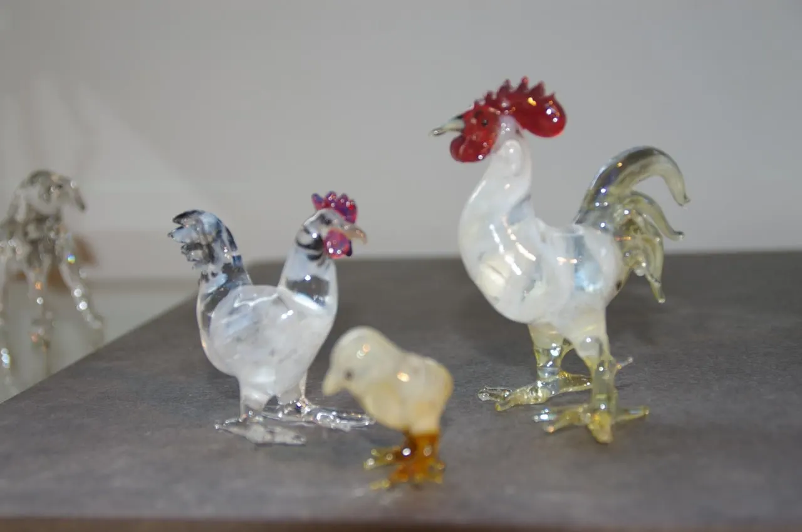
De la ferme : le coq, la poule et le poussin
Quelques animaux de l'album, en verre transparent ou en couleur.
Voir l'album photo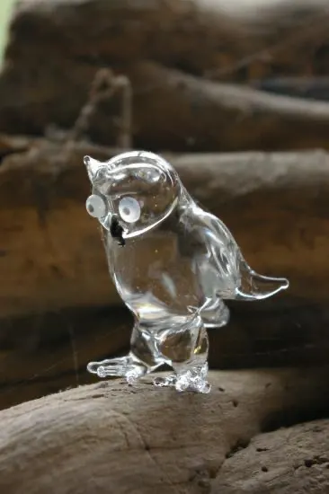
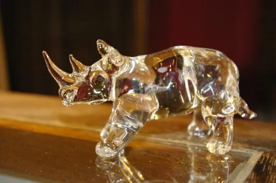
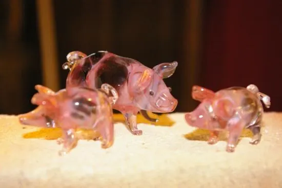
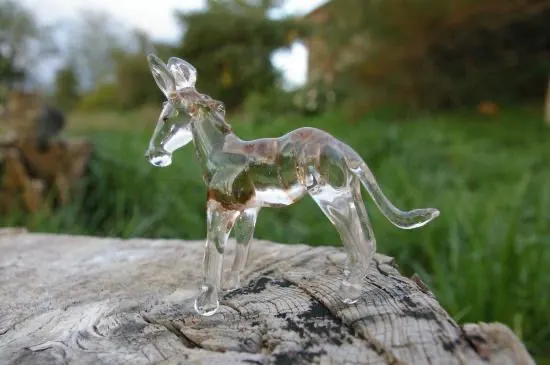
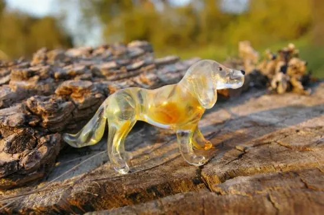
Jeux de société
Les jeux de société réunissent petits et grands : c'est toujours de bons moments et d'échanges !
Panneaux de verre
Je réalise des panneaux de verre à encastrer dans les murs, les portes, les impostes, pour créer des séparations transparentes qui gardent le côté intime des pièces.
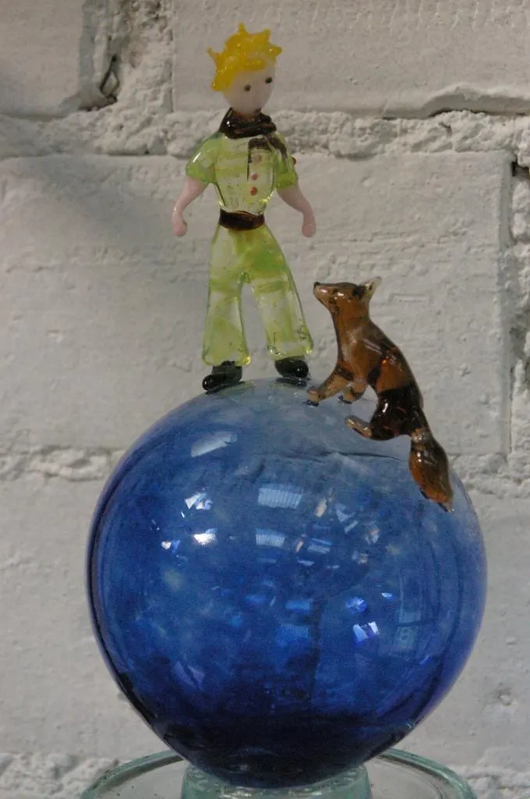
Le Petit Prince et le renard
J'ai beaucoup de plaisir à travailler aussi sur commande : n'hésitez pas à me confier vos idées pour vos cadeaux personnalisés !
Sylvie Duroch, fileuse de verre
L'atelier Fileuse et Souffleurs de verre
5 avenue de la République
24260 Le Bugue